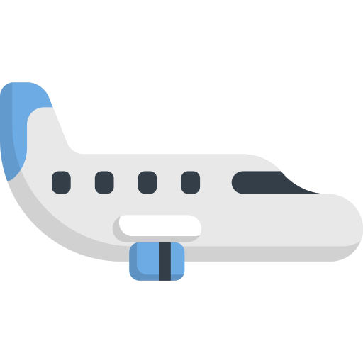
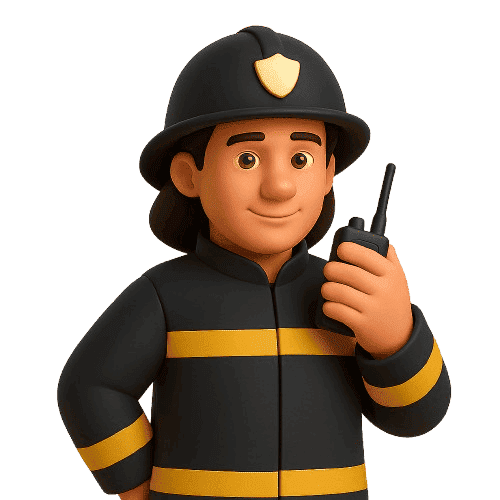
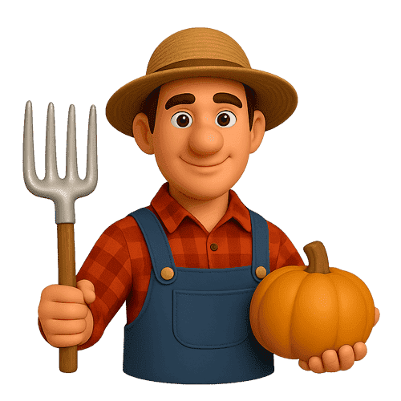
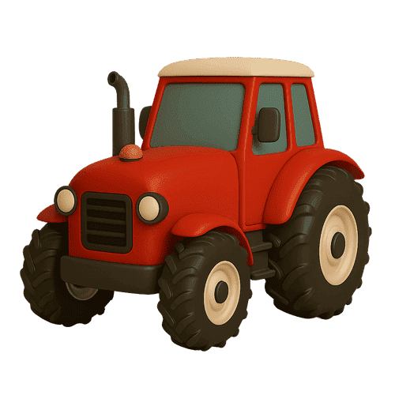

As Profissões!
A Missão do Castorzinho!
O simpático Castorzinho adora construir e trabalhar! Ele quer muito conhecer todos os trabalhadores e heróis da nossa comunidade que nos ajudam todos os dias, como os bombeiros, os médicos ou os lixeiros. Consegues ajudá-lo a resolver as missões de cada profissão?

Incrível!
Desvendaste todas as missões importantes da cidade!
És um mestre das profissões!
És um mestre das profissões!